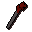

Mega-rare drop table
Shared drop proc
megararetable in scripts/drop tables/scripts/shared_droptables.rs2Entries
Drop table
| Item | Quantity | Rarity | Notes |
|---|---|---|---|
| 1 | 1/16 (6.25%) | ||
| 1 | 1/32 (3.12%) | ||
 Dragon spear | 1 | 3/128 (2.34%) |
Referenced by tables
Gem drop table table Ultra-rare drop table table